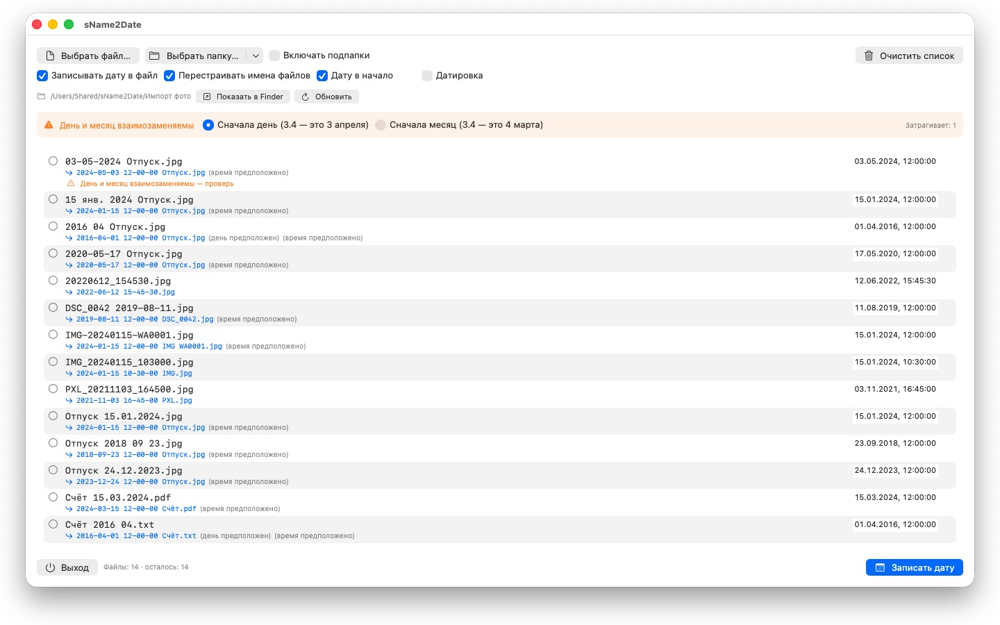
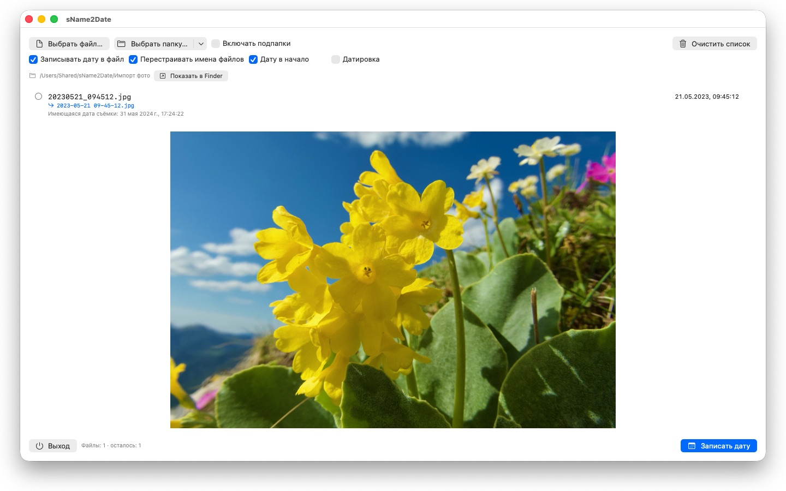

Фото без даты съёмки не встают на своё место ни в одном каталоге. sName2Date берёт дату из имени файла и записывает её туда, где её ищет любая программа для фотографий.


Многие фотографии и фильмы носят свою дату в имени файла — но не там, где её ищут программы. Если вы забираете снимки из чата, со сканера или из старого архива, то получаете файлы вроде IMG_20240115_103000.jpg или Отпуск 15.01.2024.jpg, которые в любом фотокаталоге показываются сегодняшним числом.
sName2Date читает дату из имени файла и записывает её в файл как дату съёмки. Если её там ещё нет, она создаётся.
РАСПОЗНАВАЕМЫЕ НАПИСАНИЯ
Дата и время в распространённых формах, среди прочего:
- 2024-01-15 10-30-00
- IMG_20240115_103000
- IMG-20240115-WA0001
- 2024-01-15 · 2024 01 15 · 2024_01_15
- 15.01.2024 · 15-01-2024 · 15.01.24
- 15 янв. 2024 · 15 марта 2024 · January 15 2024
- 2016 04 · 04-2016 — только год и месяц
Названия месяцев словами читаются на языке вашей системы и по-английски, в полной форме и в сокращённой.
Если в имени стоит только дата, время подставляется — какое именно, задаёте вы. Если нет и дня, берётся первое число месяца, и строка сообщает об этом. Если дат в имени несколько, выигрывает первая. А там, где день и месяц можно поменять местами, решает ваша настройка — такие файлы отмечаются отдельно, вместо того чтобы угадывать молча.
Если даты в имени нет вовсе, введите её справа в строке. Так можно указать дату вплоть до 1826 года — года старейшей сохранившейся фотографии; отсканированные снимки XIX века датируются точно так же, как вчерашние.
ЧТО ИМЕННО МЕНЯЕТСЯ
Записываются EXIF DateTimeOriginal и DateTimeDigitized, а также TIFF DateTime, у фильмов и звукозаписей — дата создания в контейнере. По желанию — и дата создания и изменения самого файла.
Данные изображения остаются нетронутыми: JPEG не пережимается, фильм не перекодируется. У фильмов и звукозаписей приложение, как правило, меняет лишь несколько байтов в контейнере, вместо того чтобы переписывать его целиком, — так и большой фильм готов за мгновение.
Дату съёмки принимают JPEG, PNG, TIFF, HEIC и GIF, а также форматы фильмов MP4, MOV и M4V и звуковые форматы M4A и M4B.
И ФАЙЛЫ, КОТОРЫЕ НЕ МОГУТ ХРАНИТЬ ДАТУ СЪЁМКИ
У PDF, текстового файла, таблицы вообще нет поля для даты съёмки — и всё же они попадают в список. sName2Date задаёт для них дату создания и дату изменения файла, единственное место, куда эти сведения вообще могут попасть; в строке это показано оранжевой галочкой вместо зелёной. Здесь расширение не играет роли: PDF, тексты, таблицы, архивы, что угодно.
Если файл трогать не нужно, снимите вверху окна флажок Записывать дату в файл. Тогда sName2Date приводит в вид ISO только имя: из Счёт 15.03.2024.pdf получается 2024-03-15 12-00-00 Счёт.pdf, и в Finder папка после этого сортируется по дате. По желанию дата остаётся там, где стояла в имени, вместо того чтобы уходить в начало.
ВСЁ МОЖНО ОТМЕНИТЬ
Один проход полностью отменяется по Cmd+Z — дата съёмки, отметки времени файла и изменённое имя файла. Cmd+Shift+Z возвращает его обратно.
ЦЕЛЫЕ ПАПКИ
sName2Date берёт целые деревья каталогов за один раз и умеет пропускать файлы, у которых дата съёмки уже есть. Однажды разрешённые папки она запоминает и больше о них не спрашивает.
sName2Date Lite · Бесплатно — Версия для одного файла за проход: запись даты из имени файла как даты съёмки в фотографию, фильм или аудиозапись, ручная установка даты, приведение имени к формату ISO и отмена всего сочетанием ⌘Z — те же возможности, что и у sName2Date, только без целых папок.
- Требуется macOS 12 или новее
- 24 языка
- Поддержка: SwiftAppsBavaria@gmx.net
Другие приложения
sCollect
Упорядочивание музыки, фильмов, аудиокниг, электронных книг и других коллекций в медиатеке.
sVectorLift
Открытие, просмотр и сохранение старого векторного клипарта в формате SVG — CorelDRAW, Windows Metafile и CGM.
SwiftRename
Пакетное переименование файлов — по дате съёмки, с последовательной нумерацией или сразу с раскладкой по папкам годов и месяцев.
sCollectPlay
Проигрыватель для медиатеки: воспроизведение музыки, фильмов, аудиокниг и подкастов просто из папки, файла iTunes XML или медиатеки sCollect — теги файлов при этом не меняются. Со списками воспроизведения, звуковыми дорожками и дорожками субтитров, а для фильмов — с замедленным воспроизведением и покадровым переходом. То, что macOS не воспроизводит сама, например MKV, AVI или DSD, передаётся внешнему плееру.
sCollectPlay Lite
Облегчённая версия sCollectPlay: просто откройте папку, файл iTunes XML или медиатеку sCollect и воспроизводите из них музыку, фильмы, аудиокниги и подкасты — со списками воспроизведения, звуковыми дорожками и дорожками субтитров, замедленным воспроизведением и покадровым переходом. Один источник за сеанс; браузер по столбцам, собственные списки воспроизведения и недавно использованные источники доступны только в полной версии.
sBikeBridge
Анализ велопоездок без загрузки на какой-либо портал: чтение файлов FIT с любого велокомпьютера, который записывает в этом формате, а также GPX и TCX. Поездки хранятся в собственной библиотеке на Mac — с картой, мощностью и пульсом, фотографиями и заметками; дубликаты распознаются при импорте. Показатели по годам или месяцам и фильтры по дистанции, набору высоты и продолжительности позволяют сравнивать поездки. По желанию карта доступна и офлайн.